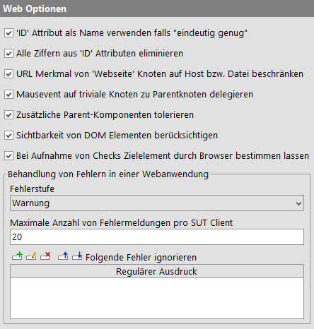
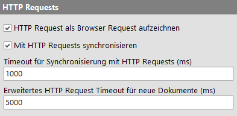
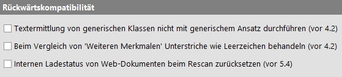

| Version 6.0.3 |
Die folgenden Optionen sind speziell für das Testen von Webanwendungen von Bedeutung.
|
|  | ||
|
| Abbildung 37.29: Web Optionen | ||
Verwende die ID eines DOM Knotens als Name der Komponente, vorausgesetzt die ID ist hinreichend eindeutig. Hierbei wird Eindeutigkeit pro Knotentyp und in Abhängigkeit von den Optionen Gewichtung von Namen (Wiedergabe) und Gewichtung von Namen (Aufnahme) interpretiert. Details finden Sie im Abschnitt "Web" in Komponentenbezeichner.
Hinweis Natürlich beeinflusst diese Option nur die Art und Weise, in der QF-Test 'ID' Attribute behandelt. Die Attribute selbst werden nicht geändert, sonst würde die Anwendung sehr wahrscheinlich nicht mehr funktionieren.
Ist diese Option aktiv, entfernt QF-Test alle Ziffern aus 'ID' Attributen, um dadurch Probleme mit automatisch generierten IDs zu verhindern, wie sie häufig in Ajax Frameworks wie GWT vorkommen. Solche dynamischen IDs können sich bei der kleinsten Modifikation der Anwendung komplett ändern, was zum Fehlschlagen von Tests führt, besonders wenn IDs als Namen verwendet werden. Durch Entfernen der dynamischen Anteile werden IDs zwar weniger hilfreich, da sie nicht mehr eindeutig sind, aber auch weniger schädlich. Um die Eindeutigkeit bei der Verwendung als Name kümmert sich QF-Test. Da IDs auch als Basis für 'Merkmal' und 'Weitere Merkmale' Attribute fungieren, ist diese Option selbst dann hilfreich, wenn IDs nicht als Namen verwendet werden.
Falls diese Option gesetzt ist werden alle Webseiten, die vom selben Host kommen, als die selbe Seite aufgenommen. Hierzu wird die URL im 'Merkmal' auf den Host reduziert. Dies ist oft hilfreich wenn die Seiten ähnliches Aussehen und Navigations-Struktur haben.
Für Datei-URLs wird die URL entsprechend auf den Dateinamen beschränkt, die Verzeichnisse werden entfernt.
Beim Aufnehmen von Mausevent auf DOM Knoten einer Webseite ist es oft sinnvoll "triviale" Knoten zu ignorieren und sich auf die wesentlichen Knoten zu konzentrieren. Beim Klick auf einen Text-Hyperlink ist es z.B. normalerweise nicht von Interesse, ob das erste Wort fett formatiert ist. Der Link ist entscheidend.
Ist diese Option gesetzt, nimmt QF-Test nicht einfach den Event für den tiefstliegenden DOM Knoten unter dem Mauszeiger auf, sondern geht die Hierarchie nach oben, bis es einen "interessanten" Knoten findet. In obigem Beispiel würde der Event mit gesetzter Option auf den <A> Knoten, ohne die Option auf den darin enthaltenen <B> Knoten aufgenommen.
Normalerweise ist die Wiedererkennung von Komponenten in QF-Test so flexibel, dass Änderungen an der Hierarchie der Komponenten weitgehend toleriert werden. Für Webseiten mit tief verschachtelten Tabellen kann dies zu Einbrüchen bei der Performanz führen, da die möglichen Varianten zur Erkennung der Zielkomponente exponentiell mit der Tiefe der Verschachtelung wachsen. Wenn Sie auf solche Probleme stoßen, versuchen Sie diese Option zu deaktivieren. Dies wird die Flexibilität reduzieren, sollte aber bei der Performanz helfen.
Hinweis Die wesentlich bessere Lösung ist die Vergabe von eindeutigen 'ID' Attributen für die verschiedenen Tabellen und andere Komponenten, so dass QF-Test's Mechanismus für die Namenserkennung greifen kann. Dies beschleunigt die Wiedererkennung nicht nur drastisch, es macht sie auch robuster gegenüber Änderungen.
Wie bei AWT/Swing oder SWT erkennt QF-Test normalerweise nur sichtbare DOM Knoten als Zielkomponenten. Allerdings ist die Sichtbarkeit bei DOM Knoten nicht immer so wohldefiniert wie bei Komponenten in einem Java GUI. So ist es z.B. möglich, dass ein unsichtbarer DOM Knoten selbst sichtbare Kinder hat. Insbesondere bei Webseiten, die nicht standardkonformes HTML enthalten, kann es vorkommen, dass ein DOM Knoten als unsichtbar eingestuft wird, obwohl er im Browser-Fenster dargestellt wird. Falls Sie Probleme mit einem solchen Fall haben, können Sie diese Option ausschalten.
Beim Aufnehmen von Checks, Komponenten oder Prozeduren muss QF-Test die jeweilige Zielkomponente ermitteln, die sich gerade unter dem Mauszeiger befindet. Bei überlappenden Knoten gibt es zwei Möglichkeiten, den korrekten zu ermitteln. Standardmäßig überlässt QF-Test dem Browser die Entscheidung, was normalerweise die beste Variante ist. Da sich die verschiedenen Browser nicht immer zuverlässig gleich verhalten, können Sie bei Problemen durch ausschalten dieser Option auf den älteren Mechanismus wechseln, der auf der Anordnung der Elemente basiert. Für die Wiedergabe von Checks hat diese Option keine Bedeutung.
Dynamisches HTML und AJAX werden mit Hilfe großer Mengen von JavaScript Code implementiert, der im Browser ausgeführt wird. Tritt in einem solchen Skript ein Fehler auf, wird dieser vom Browser entweder einfach ignoriert, oder es wird ein Fehlerdialog mit Details dazu angezeigt, je nach den persönlichen Einstellungen des Anwenders. Viele dieser Fehler sind harmlos, andere können schwerwiegend sein. QF-Test fängt diese Fehler ab und gibt die Meldung als Fehler oder Warnung im Protokoll aus. Diese Gruppe von Optionen legt die Fehlerstufe der Meldung fest und wie viele Meldungen maximal ausgegeben werden.
Die möglichen Werte für die Option "Fehlerstufe" sind "Fehler" und "Warnung". Wir raten zur Einstellung "Fehler" und dafür zu sorgen, dass derartige Probleme umgehend an die Entwicklung gemeldet werden, da sie einen Fehler in der von Ihnen getesteten Anwendung darstellen können. Bekannte Meldungen, die von der Entwicklung nicht beseitigt werden, können über die Option Folgende Fehler ignorieren von der Prüfung ausgenommen werden.
Wenn eine Webseite fehlerhaften Code enthält kann es sein, dass daraus eine große Menge von Fehlermeldungen resultiert, was zu einem Einbruch der Performance führen kann. Außerdem bringen diese Fehlermeldungen nach der ersten Handvoll keine neue Information mehr. Mittels der Option "Maximale Anzahl von Fehlermeldungen pro SUT Client" kann die Zahl derartiger Fehlermeldungen begrenzt werden.
Falls ein JavaScript Fehler nicht behoben werden kann, z.B. weil der Code von Dritten stammt, ist es sinnvoll, bekannte Fehler gezielt zu ignorieren und unerwartete Fehler trotzdem zu melden. Wenn der Browser einen Fehler meldet, durchsucht QF-Test die Fehlermeldung nach den in dieser Option angegebenen regulären Ausdrücken. Im Fall einer Übereinstimmung wird der Fehler ignoriert. Sind keine Ausnahmen definiert oder gibt es keinen Treffer, wird der Fehler entsprechend den vorhergehenden Optionen protokolliert.
Diese Optionen beeinflußen den Umgang mit HTTP-Requests.
|
|  | ||
|
| Abbildung 37.30: Optionen für HTTP Requests | ||
Beim Aufnehmen von HTTP-Requests wird standardmäßig ein 'Browser HTTP Request' erzeugt. Dieser wird direkt im Browser abgespielt, so dass der Response entsprechend sichtbar wird und der Testablauf im Browser fortgeführt werden kann. Ist diese Option deaktiviert wird stattdessen ein 'Server HTTP Request' aufgezeichnet. Die Wiedergabe erfolgt dann direkt aus QF-Test heraus und hat keine Auswirkung auf den Browser. Der Response steht nur in QF-Test zur Verfügung.
Hinweis Die Verfolgung von HTTP Anfragen ist nur für Browser im QF-Driver oder CDP-Driver-Verbindungsmodus möglich. Im WebDriver-Verbindungsmodus und bei in Java eingebetteten Browsern wie WebView findet dieser Ansatz keine Anwendung.
Da bei AJAX basierten Webanwendungen vieles asynchron abläuft, ist eine der größten Herausforderungen bei der Automatisierung solcher Anwendungen das Timing. QF-Test nutzt verschiedene Techniken zur Synchronisierung mit dem SUT und diese Option steuert eine davon. Ist sie aktiviert, verfolgt QF-Test alle HTTP Anfragen vom Browser an den Server. Vor und nach der Wiedergabe von Events wartet QF-Test zunächst darauf, dass keine Anfragen mehr offen sind. Die folgenden beiden Optionen Timeout für Synchronisierung mit HTTP Requests (ms) und Erweitertes HTTP Request Timeout für neue Dokumente (ms) dienen zur Feinjustierung dieser Funktion.
Bei der Synchronisierung mit dem SUT durch Überwachen von HTTP Anfragen - wie für die Option Mit HTTP Requests synchronisieren beschrieben - kann QF-Test nicht beliebig lange auf ausstehende Anfragen warten, das würde die Performance der Tests zu sehr beeinträchtigen. Diese Option legt die maximale Zeitspanne fest, die QF-Test in normalen Situationen auf ausstehende Anfragen wartet. Die folgende Option Erweitertes HTTP Request Timeout für neue Dokumente (ms) greift hingegen direkt nach dem Laden einer neuen Webseite.
Bei der Synchronisierung mit dem SUT durch Überwachen von HTTP Anfragen - wie für die Option Mit HTTP Requests synchronisieren beschrieben - kann QF-Test nicht beliebig lange auf ausstehende Anfragen warten, das würde die Performance der Tests zu sehr beeinträchtigen. Direkt nach dem Laden einer neuen Webseite schicken AJAX Anwendungen oft viele Anfragen und es kann eine Weile dauern, bis die endgültige Oberfläche mittels JavaScript aufgebaut ist. Diese Option legt die maximale Zeitspanne fest, die QF-Test in dieser Situation auf ausstehende Anfragen wartet. Die vorhergehende Option Timeout für Synchronisierung mit HTTP Requests (ms) greift in allen anderen Fällen.
Diese Optionen stellen älteres Verhalten von QF-Test wieder her, welches im Laufe des Entwicklungszykluses so stark verändert wurde, dass die Rückwärtskompatibilität nicht mehr garantiert werden konnte.
|
|  | ||
|
| Abbildung 37.31: Optionen für Web Rückwärtskompatibilität | ||
Vor 4.2.0 wurde in manchen Fällen von 'Check Text' oder 'Text auslesen' Knoten zu viel bzw. zu wenig Text für Komponenten mit generischen Klassen ermittelt. Hiervon waren meistens SELECT Komponenten wie auch TableCell Komponenten, die Textfelder beinhaltet haben, betroffen. Jetzt werden alle Kindkomponenten mit einer generischen Klassen für die Textermittlung herangezogen.
In älteren QF-Test Versionen wurden beim Vergleich der 'Weitere Merkmale' alle Unterstriche automatisch wie Leerzeichen behandelt. Dies konnte bei absichtlichen Suchen nach Unterstrichen zu Problemen führen.
Vor Version 5.4 enthielt QF-Test einen internen Fehler, bei dem der Ladezustand eines Dokuments fälschlicherweise zurückgesetzt werden konnte. Außerdem wurden Dokumente innerhalb von Frames diesbezüglich nicht korrekt behandelt. Beides konnte dazu führen, dass ein 'Warten auf Laden des Dokuments' nur aufgrund der Existenz eines Dokuments erfolgreich war, ohne dass dieses tatsächlich neu geladen wurde.
Ab QF-Test Version 5.4 wird das Neu-Laden wieder präziser geprüft. Dadurch kann es zu neuen Fehlern Tests kommen, in denen zu viele oder falsch platzierte 'Warten auf Laden des Dokuments' Knoten enthalten sind. Wenn eine Korrektur der Tests zu umfangreich erscheint, kann das vorherige Verhalten durch Aktivieren dieser Option wieder hergestellt werden.
| Letzte Änderung: 6.9.2022 Copyright © 1999-2022 Quality First Software GmbH |